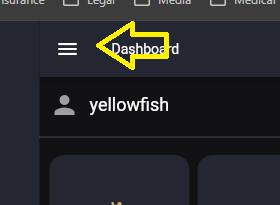
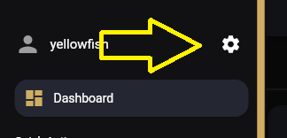
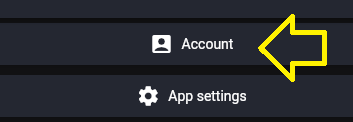
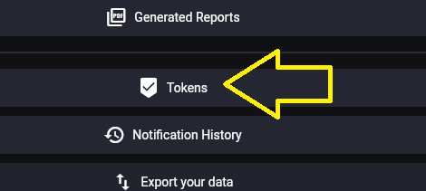
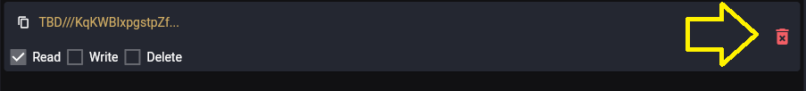
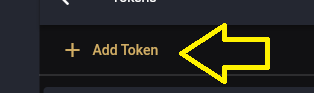
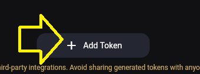
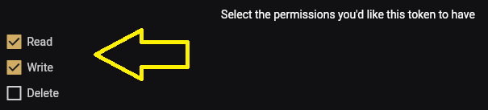
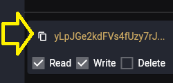

Create a Simply Plural API Token
PluralBridge uses a Simply Plural/Apparyllis API token only to export user-owned data from Simply Plural.
SP_TOKEN is export-only. It is not a PluralBridge credential.
Security note
API tokens should be treated like passwords.
Do not post tokens publicly. Do not commit them to Git. Do not place token text in screenshots unless the token text is fully obscured.
For export and preservation workflows, **Read** permission is required.
**Write** permission is optional and should be used only if future tooling needs write operations.
**Delete** permission is not recommended for preservation exports.
Step 1: Open the main menu
Click the hamburger menu in the upper-left corner.

Step 2: Open Settings
Click the settings gear.

Step 3: Open Account
Click Account in the settings panel.

Step 4: Open Tokens
Click Tokens in the account settings list.

Step 5: Revoke an existing token when rotating credentials
If you are invalidating an old token or replacing an exposed token, click the delete icon for the existing token. The token text in this screenshot is intentionally blurred.

Step 6: Add a new token
Click Add Token from the token list area.

Step 7: Confirm Add Token
Click Add Token again on the token creation control.

Step 8: Select token permissions
For export/preservation work, Read permission is required. Write should only be selected if future tooling needs write operations. Delete is not recommended for preservation exports.

Step 9: Copy the new token
Long-press or select the generated token value when you need to copy it. Store it only in a local environment variable such as SP_TOKEN. The token text in this screenshot is intentionally blurred.

Git Bash environment variable example
read -s -p "Paste Simply Plural token: " SP_TOKEN
echo
export SP_TOKEN
printf 'Token length: %s\n' "${#SP_TOKEN}"Expected result:
Token length: <number>A token length prints without displaying the token itself.
Project boundaries
PluralBridge is published by Needs of the Many.
PluralBridge is independent and has no affiliation with Simply Plural, Apparyllis, or the Simply Plural development team.
SP_TOKEN is export-only and used only to export user-owned data from Simply Plural/Apparyllis. It is not a PluralBridge credential.